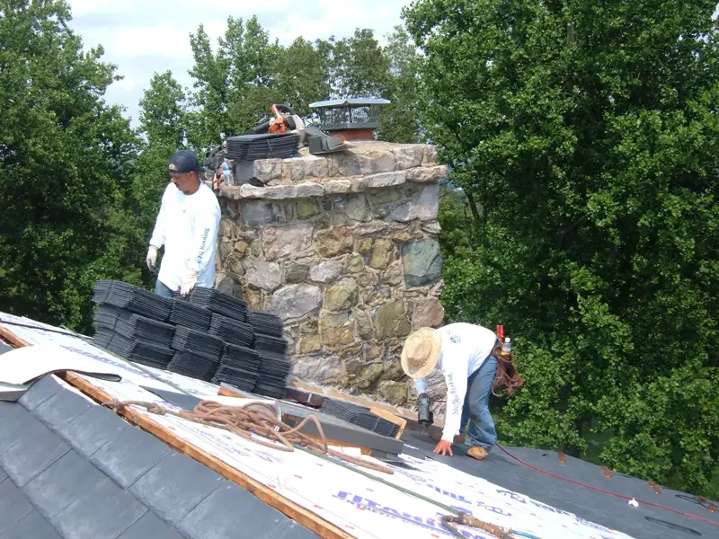
Roofing
Re-roofs and tear-offs, done properly underneath.
- Plywood decking replaced where needed
- Underlayment and asphalt shingles
- Velux skylights
- Chimney re-flashing and ridge vents
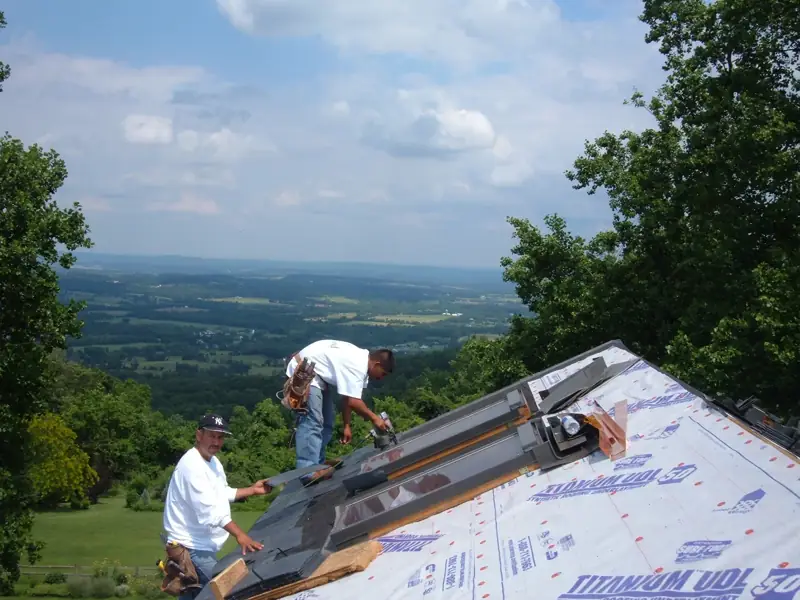
Veteran-owned · Family-run
Jeff O'Connell started the company from his garage while finishing 30 years in the Marine Corps. Today he runs it with his son Sean, a Navy veteran.
Rather talk?
01 · Roof & siding check
Three or four taps. Safety comes first, then a clear next step and what to photograph before you call.
A general guide, not an inspection. Look from the ground. If anything looks dangerous, get clear and call 911.
02 · What they do
Residential roofing, siding, windows, trim and gutters. New construction, replacement or repair.

Re-roofs and tear-offs, done properly underneath.
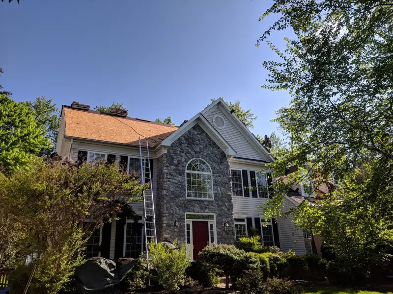
Low-maintenance vinyl siding from Mastic / Ply Gem in a range of colors.
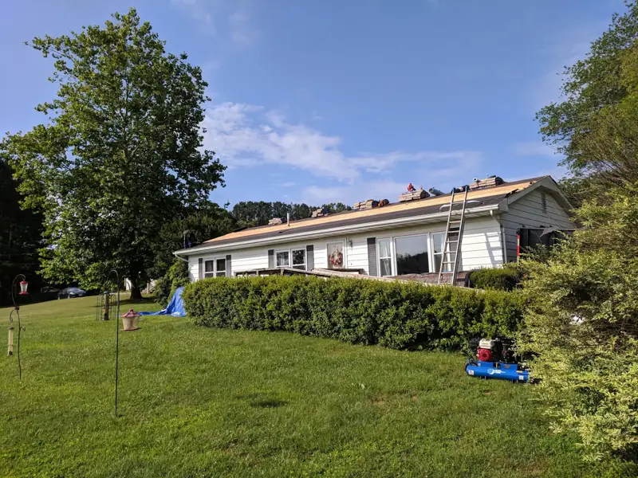
Aluminum gutters made on site to fit each house, with hidden hanger screws.
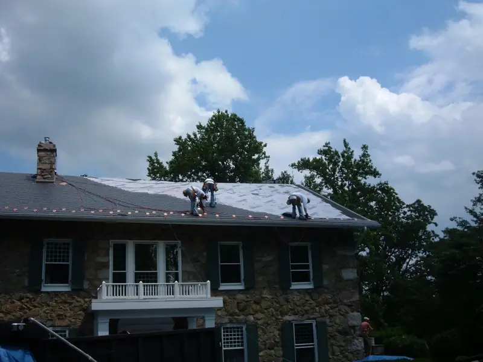
Earthwise windows and doors, backed by the Good Housekeeping Seal.
03 · The promise
1-year guarantee on all labor. Best materials available, every job.
Realistic schedules that fit around your life. Quality never traded for speed.
Free estimates, flexible on materials and scheduling.
In their own words, from the company's website.
04 · On the job
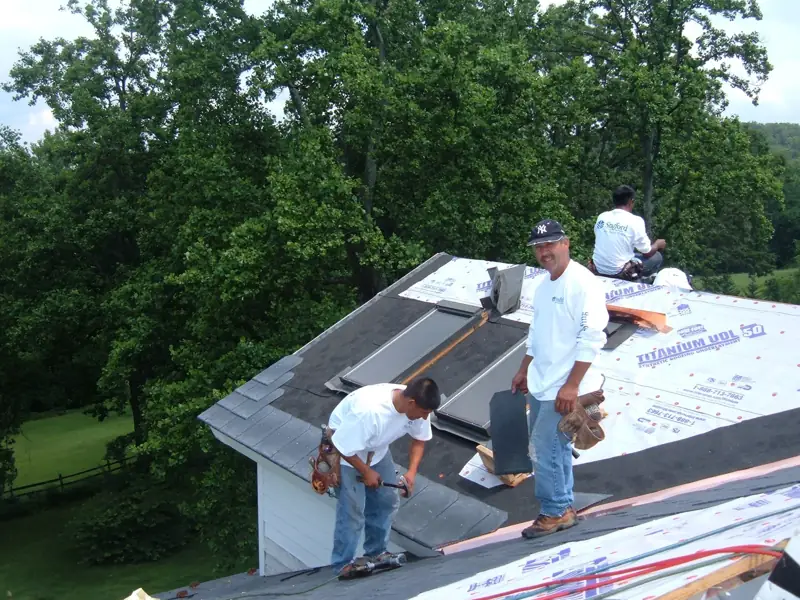
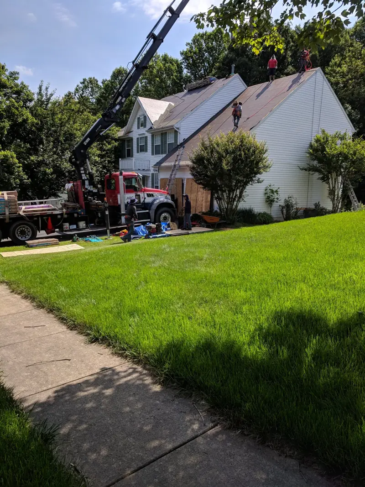
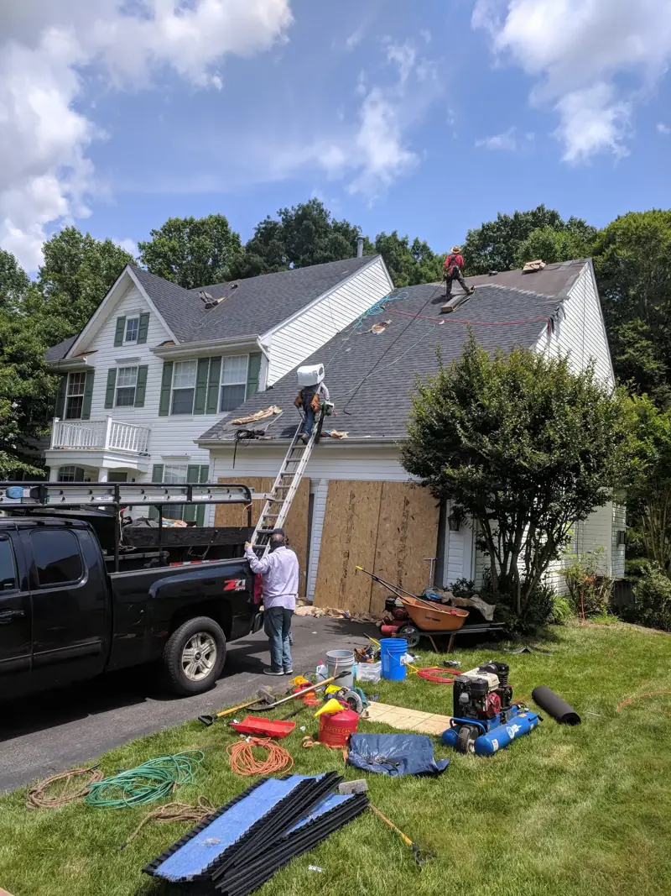
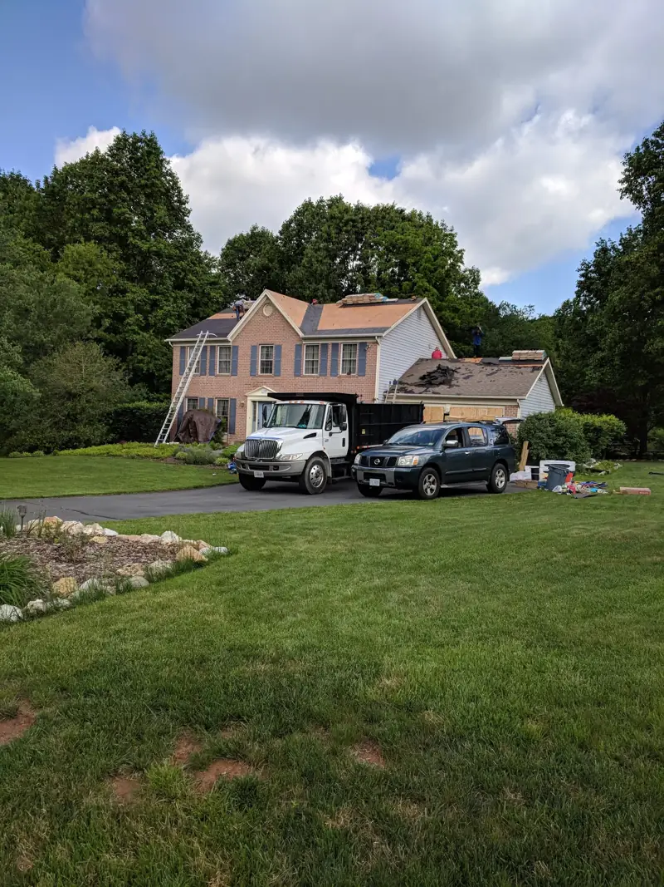
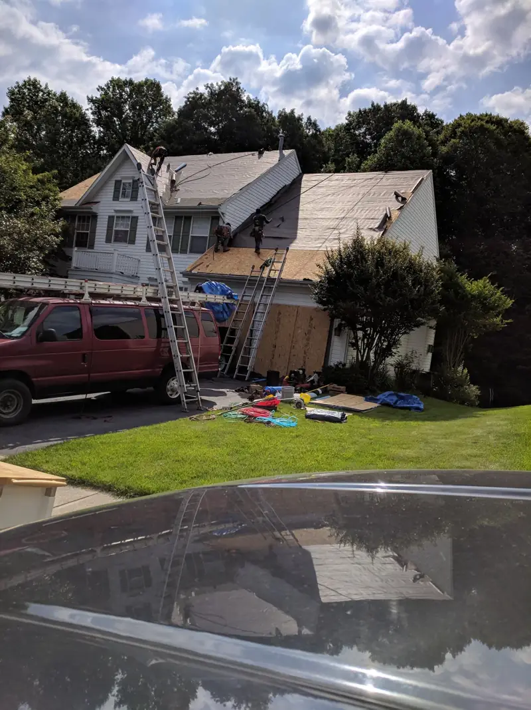
Photos from the company's own project gallery.
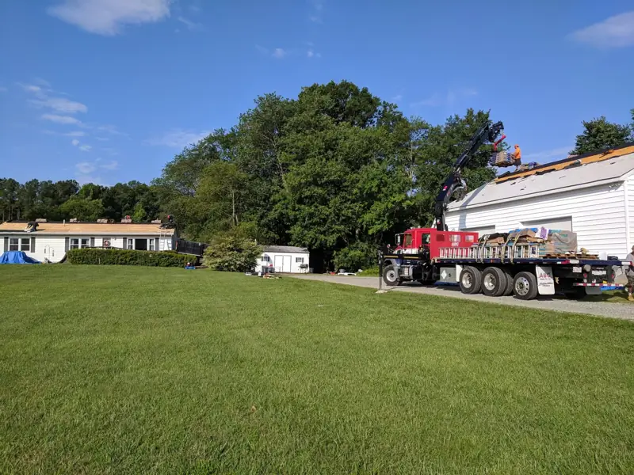
05 · Who you're hiring
“I started the company in 1996 from my garage, while finishing my 30-year service in the Marine Corps. I've been servicing the northern Virginia area for over 15 years and have recently brought my son, a Navy veteran, Sean, into the business.”
— Jeff O'Connell, founder
Serving Stafford, Spotsylvania and Prince William Counties and Northern Virginia.
06 · Neighbors say
Rated 5.0 on Birdeye, as of October 2026. Every quote below is word for word.
“Great, professional business. I like to support local and veteran businesses. This is both, would definitely recommend and use them again.”
“You all did my roof and siding on a townhouse I own in Dumfries a few years ago and you did excellent work and you were very professional and I highly recommend you all”
“Excellent! These guys are the best! I would definitely trust them again to do another job. I have recommended them to all of our neighbors affected by the hail storm.”
07 · Free estimate
Takes a minute. Did the roof check? Your answers are already in the notes.